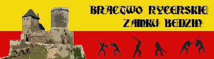

Bractwo Rycerskie Zamku Bêdzin
Oferta
Szanowni Pañstwo,
Jeste¶my jedn± z wiêkszych i bardziej znanych w Polsce grup rekonstrukcji historycznych. Swoj± siedzibê posiadamy na Zamku Królewskim w Bêdzinie w po³udniowej Polsce piêknej gotyckiej warowni obronnej z po³owy XIV wieku. W ci±gu 10 lat istnienia zorganizowali¶my samodzielnie i we wspó³pracy w o¶rodkami kultury, agencjami promocyjnymi i artystycznymi wiele imprez o zasiêgu masowym (np. Turnieje Rycerskie w Bêdzinie, Dni Grodu Przemys³a w Poznaniu), szereg pokazów na ¶wiêta miast, imprezy firmowe, promocyjne (centra handlowe i rozrywkowe oraz filmowe), imprezy charytatywne, okoliczno¶ciowe i wiele innych. Mamy na swoim koncie równie¿ udzia³ w filmach, przedstawieniach teatralnych i widowiskach oraz programy telewizyjne. Dzia³amy pod honorowym patronatem Prezydenta Bêdzina i Muzeum Zag³êbia D±browskiego. Jeste¶my prawdziwymi pasjonatami odtwórstwa ¶redniowiecza, a nasze zami³owanie, wiedza historyczna oraz bogate do¶wiadczenie czyni± nasze dzia³ania i imprezy profesjonalnymi niepowtarzalnym ¶redniowiecznym klimacie i wyj±tkowym kolorycie. Nasze imprezy przyci±gaj± szerok± rzeszê publiczno¶ci (przyk³adowo organizowany przez nas pod naszym zamkiem turniej rycerski ogl±da co roku prawie 10 tysiêcy widzów. Stawiamy du¿y nacisk na wysoki poziom odtwórstwa historycznego, posiadamy bogaty sprzêt i wyposa¿enie (uzbrojenie, stroje, sprzêt obozowy itd.). Bractwo nasze liczy w tej chwili oko³o 30 osób. Bêd±c grup± o ugruntowanej pozycji mo¿emy ¶mia³o powiedzieæ, i¿ posiadamy kontakt z wiêkszo¶ci± odtwórców historycznych w Polsce, a tak¿e poza granicami kraju. Wspó³pracujemy z rzemie¶lnikami, grupami muzycznymi, bractwami, teatrami i grupami tanecznymi. Nasz± domen± jest okres II po³owy XIV wieku i takie realia historyczne staramy siê wiernie odtwarzaæ i prezentowaæ. Uczestniczymy w wielu imprezach historycznych takich jak turnieje rycerskie, jarmarki historyczne, inscenizacje bitew w tym w jednej z najwiêkszych w Europie i na ¶wiecie – inscenizacji bitwy pod Grunwaldem, gdzie co roku wraz z oko³o 6 tysi±cami innych rekonstruktorów tworzymy historyczny obóz i bierzemy udzia³ w turniejach, potyczkach i bitwach. Uczestniczymy w licznych imprezach na terenie Europy, miêdzy innymi w Austrii, Niemczech, Belgii, Ukrainie, Bia³orusi, Rosji i Czechach.
Poni¿ej prezentujemy nasze propozycje dotycz±ce organizowanych przez nas imprez, licz±c na zainteresowanie z Pañstwa strony.
Proponujemy zorganizowanie imprezy z naszym udzia³em przy wykorzystaniu poni¿szych elementów:
- Rozbijamy i prezentujemy obozowisko ¶redniowieczne, które stanowi barwn± oprawê imprezy i bazê naszych pokazów i zabaw: rozstawiamy namioty, wiatê, sto³y, dyby, naczynia, uzbrojenie i prowadzimy ¿ycie obozowe w trakcie imprezy, wykonuj±c nastêpuj±ce elementy ¿ycia ¶redniowiecznego:
- Turniej walk pieszych: walki turniejowe nie inscenizowane, toczone wed³ug regu³ stosowanych na obecnie rozgrywanych turniejach w oparciu o zasady turniejów ¶redniowiecznych. Walki na miecze i inny rodzaj broni jak topory i buzdygany. Turnieje powy¿sze wy³aniaj± faktycznych zwyciêzców zmagañ. Powy¿sze zmagania turniejowe s± wyj±tkow± atrakcj± dla widzów, gdy¿ s± w pe³ni realistyczne i towarzyszy im autentyczny duch wspó³zawodnictwa.
- Napad na obozowisko i potyczka: potyczka rozegrana z pe³nym realizmem w wykonaniu walcz±cych oraz ³uczników i strzelców.
- Scenki obyczajowe z ¿ycia epoki, np. s±d bo¿y, napad rabusiów, s±d nad skazañcem, „uwolnienie ksiê¿niczki”, potyczki, walki piechoty na kordy i puklerze itd.; scenki czêstokroæ zawieraj± zabawne elementy, ¶mieszne dla wspó³czesnego widza,
- Pokazy walk: pojedynki i potyczki na broñ ró¿nego rodzaju (miecze, topory, buzdygany, tasaki, halabardy).
- Zabawy z widzami:
- strzelanie z ³uku, rzucanie w³óczni±, toporkami i no¿ami do celu, gry i zabawy plebejskie (wy¶cigi dru¿yn w drewnianych nartach, walki na worki na równowa¿ni, „m³ynek rycerski” (okrêcanie siê na mieczu i ¶cinanie kapusty), zakuwanie widzów w dyby i inne),
- przeprowadzenie turnieju ³uczniczego i rzutu w³óczni± i sztyletami dla publiczno¶ci z nagrodami w postaci pami±tkowych glejtów, pokaz tañców dawnych i wspólna nauka prostego tañca ¶redniowiecznego, mo¿liwo¶æ przymierzania i ogl±dania przez widzów ¶redniowiecznego uzbrojenia, fotografowania siê w nim i podczas zabaw.
- Wieczorem po zmierzchu (dla odpowiedniego efektu) pokaz tañca ognia.
Przebieg imprezy organizujemy w ten sposób, aby pokazy i zabawy dla publiczno¶ci przeplata³y siê wzajemnie, aby zapewniæ atrakcyjno¶æ i ró¿norodno¶æ. Najczê¶ciej wygl±da to tak, ¿e wystêpy sk³adaj± siê z bloków, które nastêpuj± co jaki¶ czas, np. scenki tematyczne z walkami przeplatane s± tañcem i zabawami. Oprawê muzyczn± imprezy stanowi muzyka ¶redniowieczna odtwarzana z p³yt i innych no¶ników.
W trakcie imprezy proponujemy plenerow± obs³ugê gastronomiczn±: grille, wyszynk piwa (mo¿liwe tak¿e miody), napoje. Wystrój stanowi± drewniane sto³y, gliniane i drewniane sprzêty, namioty. Obs³uga wystêpuje w strojach z XIVw. Menu oprócz miês grillowanych, Kie³basy Burgrabiego, tworz± potrawy nawi±zuj±ce do dawnej kuchnii, np. Wójtowe Jad³o (kotlety z ziemniaków i cebulki), Pieczonki Obozowe, ¯urek Zamkowej Babci, Kartacze Bombardiera itp.
Oprócz potraw oferujemy sprzeda¿ pami±tek takich jak: drewniane miecze, tarcze, figurki rycerzy, no¿e, kapelusze rogo¿ynowe, naczynia i inne bêd±ce replikami przedmiotów ¶redniowiecznych. Nasze stoiska gastronomiczne dope³niaj± charakteru i kolorytu oraz dodaj± smaku, dos³ownie i w przeno¶ni, imprezom. Proponujemy równie¿ obok funkcjonuj±cego obozowiska rycerskiego zorganizowanie targowiska ¶redniowiecznego sk³adaj±cego siê z kramów rzemie¶lników zajmuj±cych siê dawnymi i tradycyjnymi rzemios³ami. Rzemie¶lnicy wystawiaj± na sprzeda¿ swoje wyroby oraz przedstawiaj± swoje rzemios³o. Proponujemy na przyk³ad kramy : garncarstwo, wyrób i sprzeda¿ akcesoriów ³uczniczych, jubilerstwo, wyrób naczyñ i sprzêtów z drewna (stolarstwo), wikliniarstwo.
Oprócz powy¿szych propozycji mo¿emy równie¿ przeprowadziæ pokazy konne w wykonaniu najlepszych je¼d¼ców w Polsce, zajmuj±cych siê tego rodzaju walkami. Jeste¶my równie¿ w stanie zaprosiæ zespo³ wykonuj±cy muzykê ¶redniowieczn±, który zagra koncert podczas imprezy. Mo¿emy tak¿e zorganizowaæ wyj±tkow± atrakcjê, jak± s± pokazy sokolnictwa. Specjalnie szkolone przez do¶wiadczonych sokolników ptaki drapie¿ne wraz ze swymi tworz± szczególny pokaz.
Oczywi¶cie ka¿d± imprezê traktujemy indywidualnie i mamy wzgl±d na jej specyfikê oraz specyfikê terenu, na którym ona siê odbywa, tak wiêc podczas ka¿dej imprezy dostosowujemy siê do warunków, oczekiwañ i wymagañ organizatorów, st±d istnieje mo¿liwo¶æ szerokiej modyfikacji proponowanych przez nas elementów.
Oczekujemy na sugestie i uwagi z Pañstwa strony, aby ostateczny kszta³t imprezy uwzglêdnia³ Pañstwa mo¿liwo¶ci i oczekiwania.
Podane propozycje mog± byæ przez Pañstwa modyfikowane, a ostateczny kszta³t i koszt imprezy ustalony po wprowadzeniu Pañstwa zmian. Ka¿d± imprezê traktujemy indywidualnie i dostosowujemy siê do oczekiwañ organizatorów.
December 28th, 2010 by Bractwo

-
Strony
-
Kontakt
- Telefon 0663782274
-
Imprezy
- Grudzieñ 2010
- Styczeñ 2011
- Luty 2011
- Marzec 2011
- Kwiecieñ 2011
- Maj 2011
- Czerwiec 2011
- Lipiec 2011
- Sierpieñ 2011
-
Linki
Copyright
Copyright © 2006 Fotoladia. Designed by Free CSS Templates Downloaded from Tworzenie stron www
-
Mapa witryny